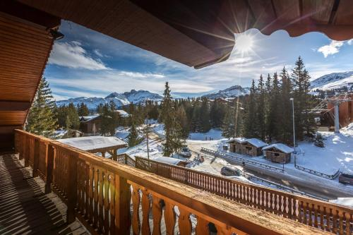
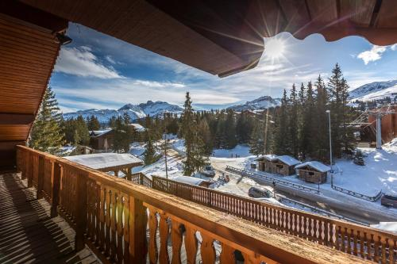

Bienvenidos a PAW Hotel Resort Internacional
El hotel cuenta con 32 habitaciones con vista al campo y al polo del hotel, y con amplios espacios verdes, piscina climatizada, cancha de polo, juegos y actividades para niños. En el Restaurante La Perdiz ubicado en el primer piso, se puede degustar comida gourmet de campo y asado.
 


Habitaciones